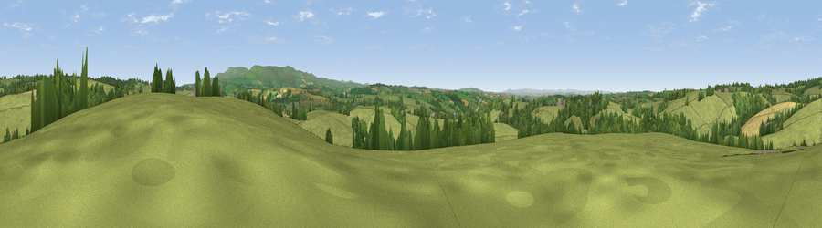

Viewpoint near Bratton Clovelly
#21182 in England · top 39% of its area beats it · near Bratton Clovelly · access?Where it is
The exact computed spot (SX 47525 92175). Click the marker for map links.
Public access: no public right of way or access land is recorded at this exact spot — it may be on private land. Computed from Natural England's CRoW access layer and OpenStreetMap rights of way — not the legal definitive map. Always verify locally.
The view, rendered

A 360° render of this exact spot computed from the terrain model, tree cover and land cover — summer colours, afternoon light, calibrated against photographs of famous viewpoints. Real trees, hedges and buildings will differ in detail.
The panorama
Grey silhouette: terrain skyline in each direction (720 bearings, Earth curvature and refraction included). Dashed green: skyline with trees (+15 m) and buildings (+8 m) as obstacles. Blue strip: how far the ground is visible on each bearing.
Where the view opens
Wedge length = distance to the farthest visible ground on that bearing (vegetation-aware). Rings at 10, 25 and 50 km.
What fills the view
82% grassland · 14% woodland · 3% cropland ·
Angular shares of the visible panorama (visual magnitude), not map area. Landscape diversity 0.25 (0–1 Shannon).
Key numbers
More beautiful places nearby
The staircase of upgrades: each row has a higher view potential than everything closer. Driving times are estimates from straight-line distance, calibrated against real road routing — check an actual route before setting out.
| Place | Direction | Drive | Score |
|---|---|---|---|
| Viewpoint near Germansweek | NW · 2 km | ~6 min | 51.5 |
| Viewpoint near Germansweek | WNW · 3 km | ~8 min | 52.5 |
| Viewpoint near Bratton Clovelly | NNE · 3 km | ~8 min | 60.9 |
| Sourton Tors | ESE · 7 km | ~15 min | 74.8 |
| Viewpoint near Sourton | ESE · 8 km | ~16 min | 75.7 |
| Great Links Tor | SE · 9 km | ~18 min | 77.8 |
| Yes Tor | E · 11 km | ~20 min | 78.5 |
| Kit Hill | SSW · 23 km | ~38 min | 80.3 |
50.70916, -4.16088 · source: screening · position refined by local search. Computed location — check access rights before visiting.